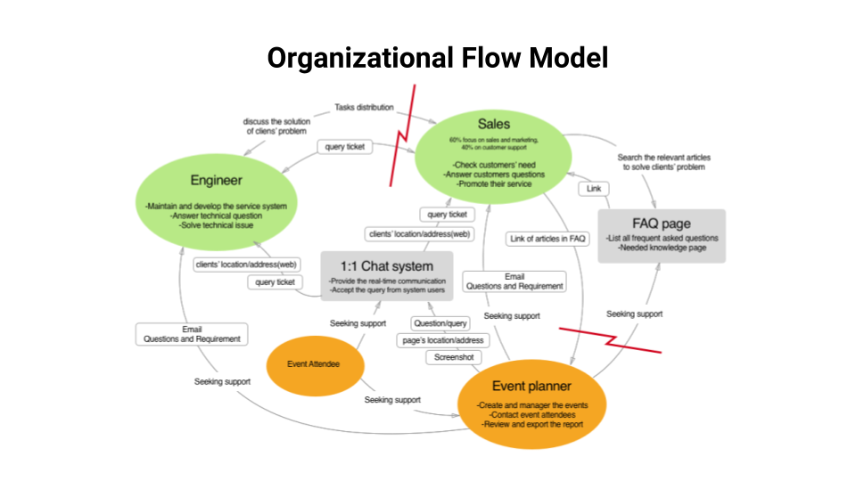
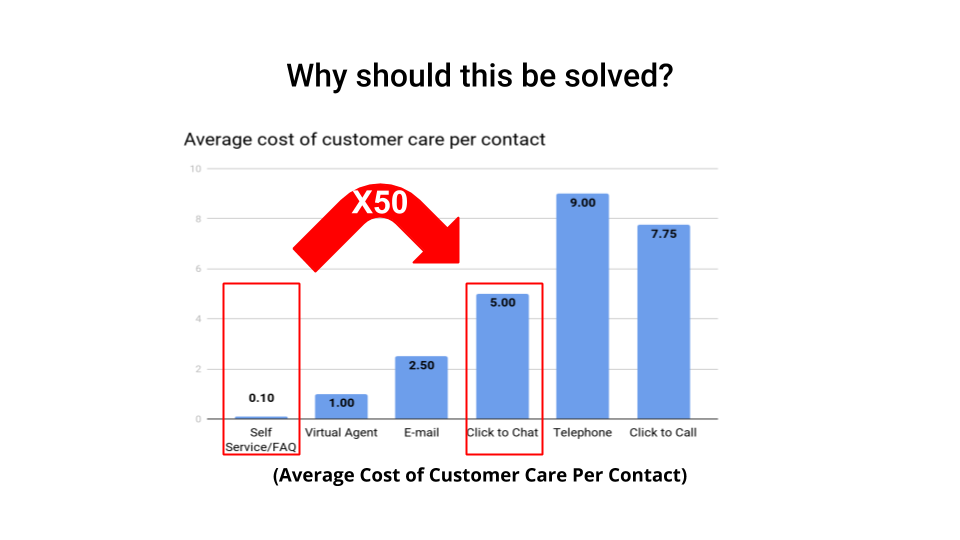
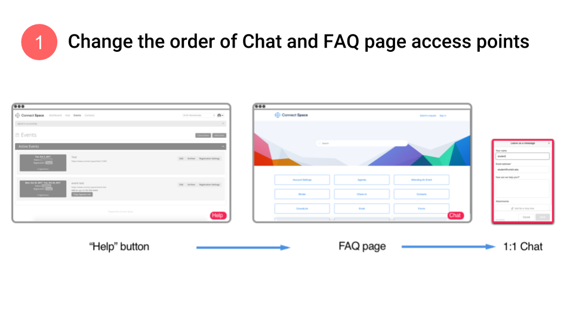
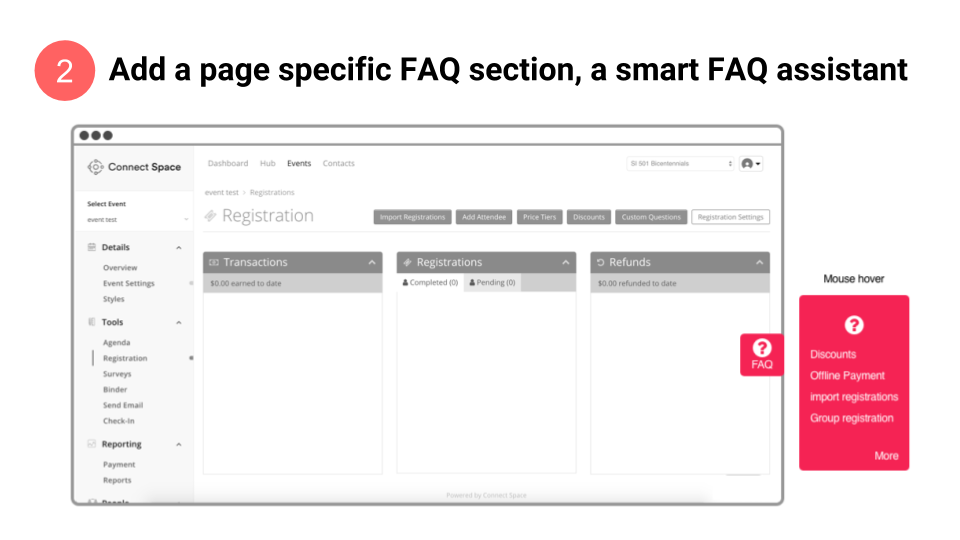

Connect Space
| Team: | Team of 5 | Duration: | 8 weeks |
| Role: | UX Consultant |
Client Summary
Our client is an event planning software company which provides resource planning, intra-team communication, and the communication with the attendees, speakers and other people related to the project. It helps organizers monitor event planning progress, manage registrations, post agendas, and analyze data after the event.
The Problem
Customer service is a strong part of the client business. They interact with their customers to address their problems regularly. The customer service executives provide live support to the customers through a live chat feature on the portal. As the customer base expanded, the queries increased eventually increasing the workload on the team. The client has a knowledge base with all the frequently asked questions (FAQs) that can help the customers and reduce the queries for the customer support team. However, the customers do not use the FAQ page; thereby increasing the work of the support team.
The client wanted us to help them reduce the burden on their customer support team yet maintain customer satisfaction. Our team’s objective was to find a way to promote the use of FAQ pages and reduce the load on the client team answering questions through the chat feature.
Process
Initial meeting
We established an understanding of the client organization and their goals. We also identified the potential interviewees from the client team and the customers.
Background research/Heuristic Evaluation
In this phase, we conducted competitive analysis and explored other cases where the same problem occurred.Heuristic evaluation was conducted to understand the cause of this problem. We analysed the navigation, flow and FAQ pages to understand the workflow better.
User Interviews
We designed 5 different interview protocols for different stakeholders. We conducted 6 user interviews which included the customer service team, designer, developer, and the customers. All the interviews notes were annotated within 48 hours of the interview and key information was synthesized including important quotes and interviewer comments.
Affinity wall
After all the interviews, we did the interpretation sessions and came up with an affinity wall to analyze the qualitative data we collected through interviews. We had around 350 affinity notes generated after our interpretation session that we later used to analyse our findings.

After several iterations of arrangements, a few patterns started to emerge out of the affinity notes and these patterns were summarized using a more generalized statement and the main causes of the problem were highlighted by these higher level notes.

Solution Overview
 A flow model was constructed using the affinity wall which highlighted the problem areas. The visibility of the FAQ and the order of execution for solving a customer query were identified as major causes for the high load on customer service executives.
Various solutions were discussed and 3 solutions were presented to the clients based on a cost-value analysis for the implementation.
Recommendations
The following recommendations were made after optimizing the solutions for low cost and high impact. Modify the process of solving customer queries to guide the user towards the FAQ page.Improve the visibilty of the FAQ page to the end-user.
We presented our recommendations to our client providing both short term and long term solutions. The recommendations were well appreciated and a consulting report was submitted as our final deliverable.
 